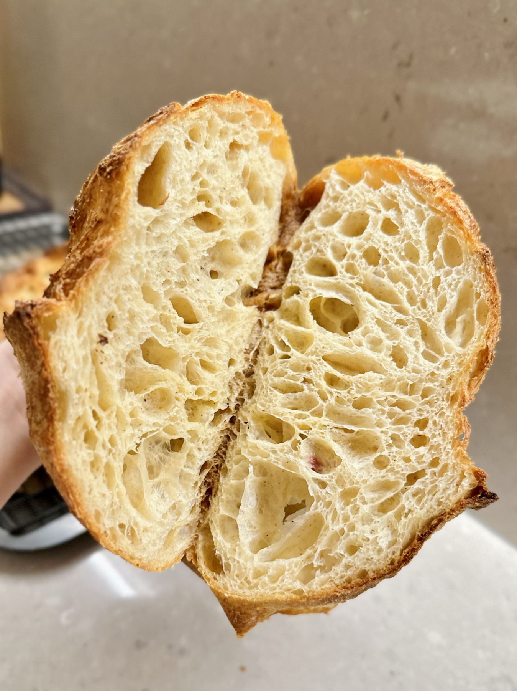

Six years ago, I went hunting for a good rustic loaf for a dinner I was hosting.
Finding none, I went home and baked my first overnight bread. My home never smelled this good, and my guests noticed before they even sat down.
If instant yeast can smell this good, sourdough must be heavenly.
Down the rabbit hole I went. Countless loaves, revived starters and plenty of bread my family bravely ate in the name of “research” later, I began sharing with friends. After years of refining, I’m making it official.
Meet mio·rie, my little micro-boulangerie.

Around 40 hours · cold fermented
Our bread story
Simple loaf, timeless craft.
Good bread begins with good ingredients, but it is time that brings them together.
A curated flour blend
Premium European flours with stone-ground spelt and rye, chosen to carry a long fermentation. Whole grains go into every loaf.
Around 40 hours
A long, cold fermentation, given the time it needs rather than rushed for production.
Carefully controlled
Steady temperatures let the wild yeast work at its own pace.
The result is bread with distinctive character: a deeply developed flavour, and a crust that speaks of time.
Made with time, never with haste. Naturally leavened, thoughtfully crafted.